La tabla periódica con datos en los que puedes confiar.
Los 118 elementos y las 18 tablas del apéndice de tu libro de química, con calculadoras de laboratorio y cuestionarios. Datos contrastados con PubChem, IUPAC, NIST y el OIEA. Sin anuncios, sin cuenta y sin conexión.
Para iPhone, iPad, Mac, Apple Vision Pro y Apple Watch · en 20 idiomas
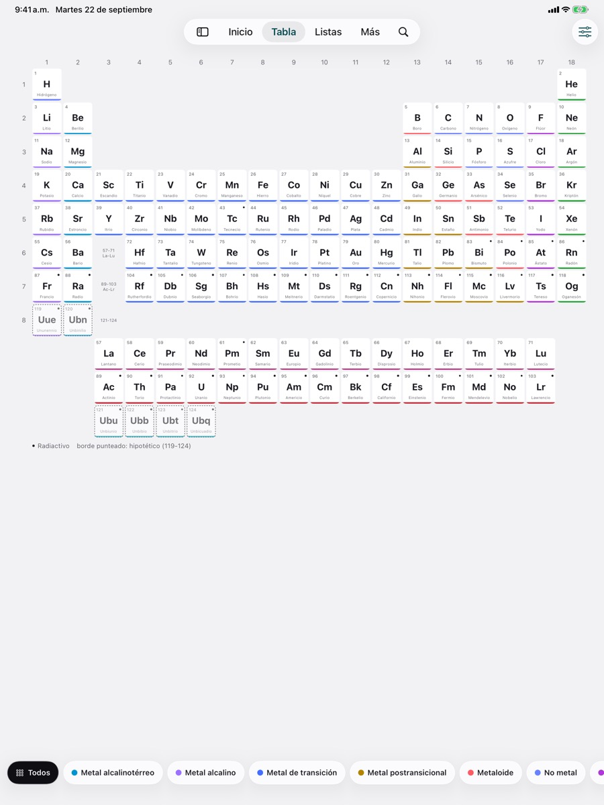
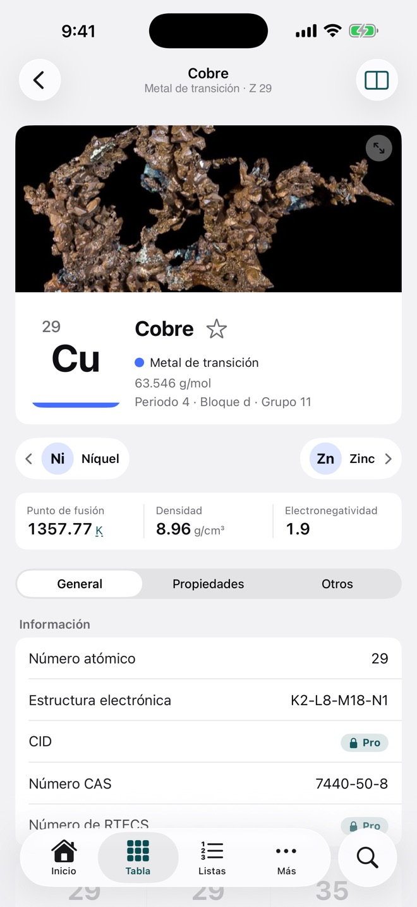
Consulta, calcula, compara y practica.
Todo lo que necesitas para la clase de química, en el bolsillo.
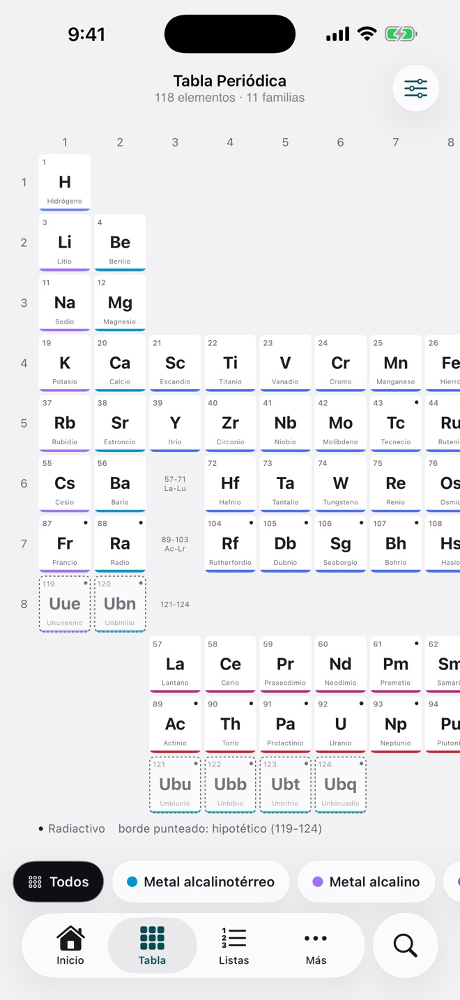
La tabla completa
La ficha del cobre
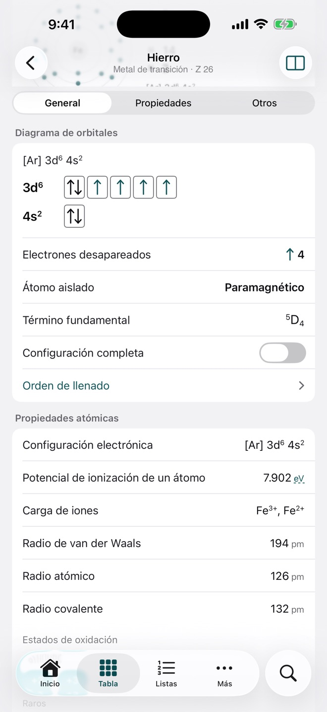
Orbitales del hierro
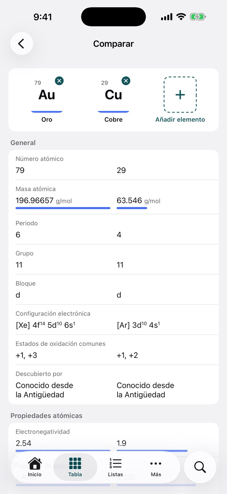
Oro frente a cobre
Calculadora de disoluciones
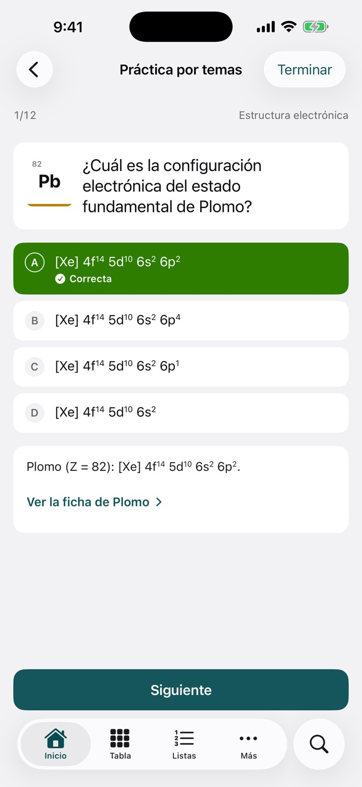
Cuestionarios por temas
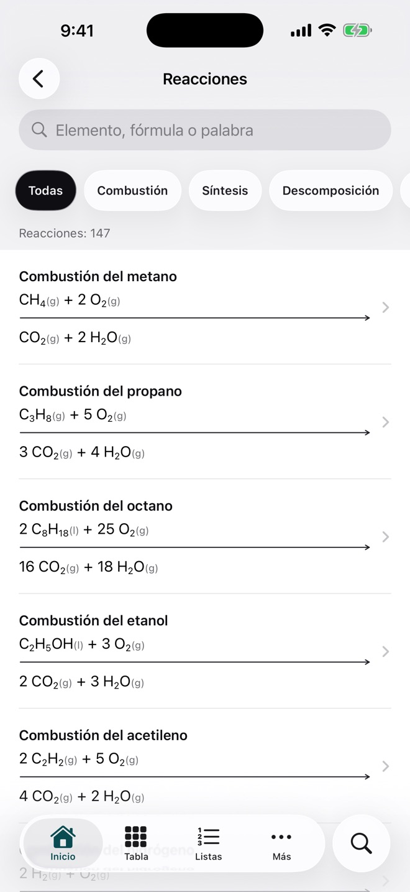
Reacciones químicas
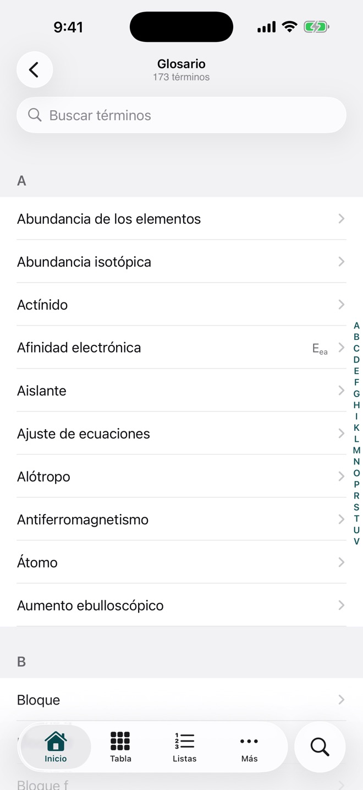
Glosario
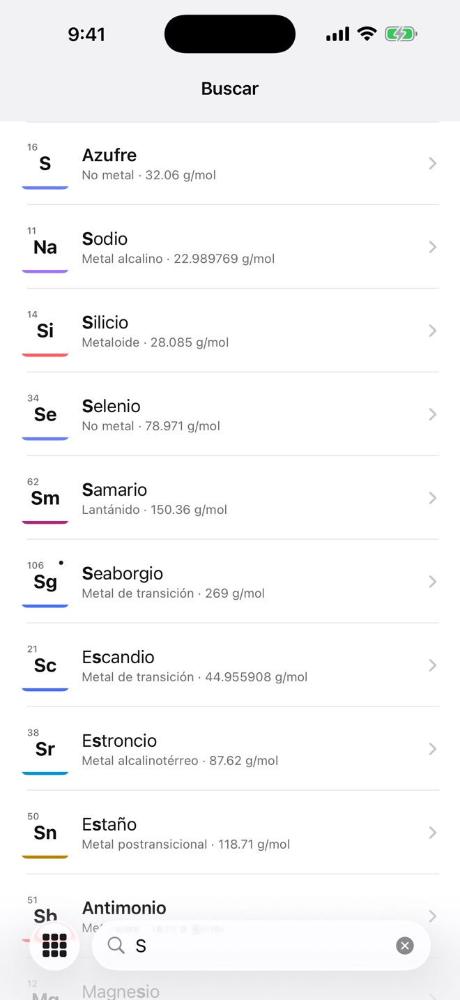
Búsqueda al instante
Modo oscuro
Más espacio en el iPad.
La misma app, con fichas y tablas que aprovechan toda la pantalla.
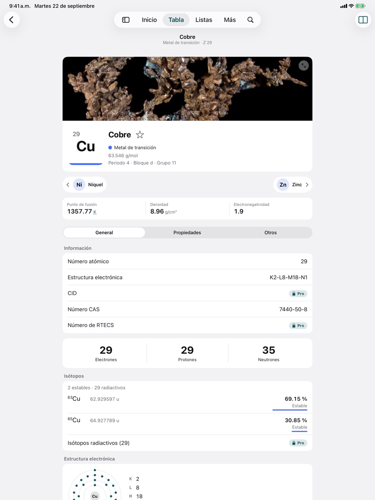
La ficha del cobre
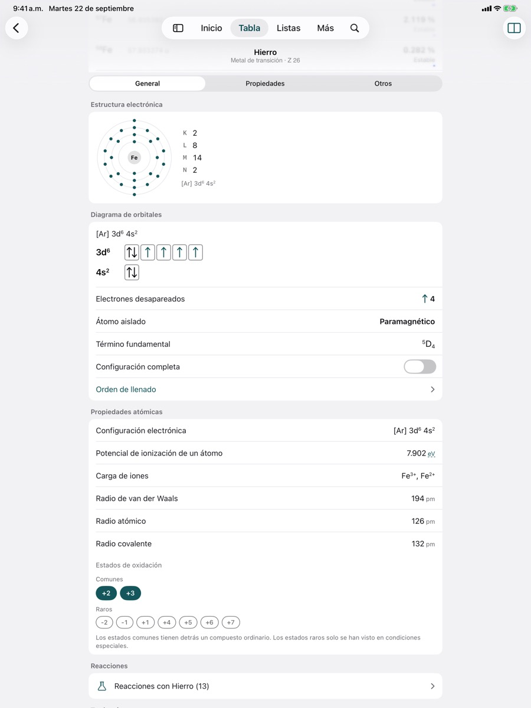
Estructura y orbitales del hierro
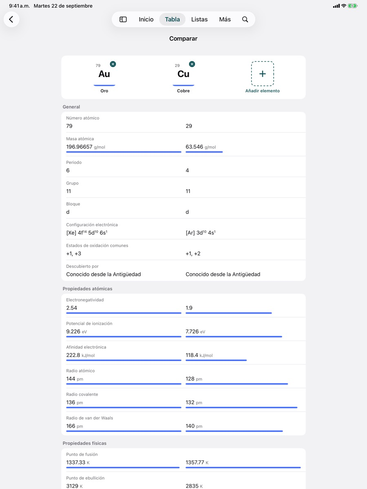
Oro frente a cobre
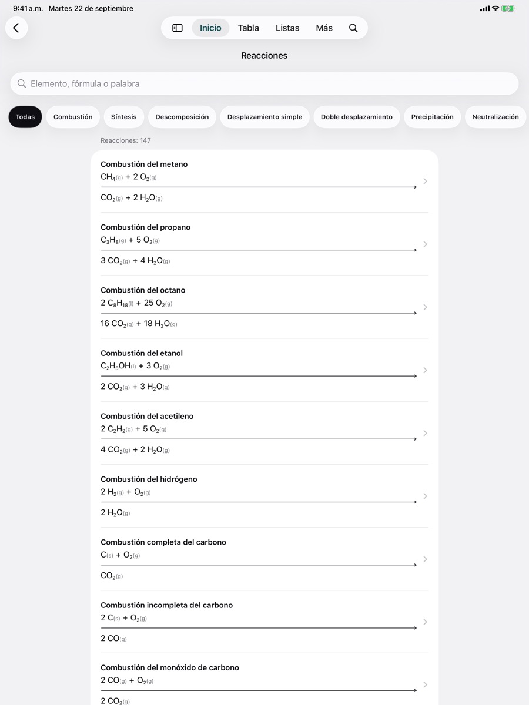
Reacciones químicas
Todo lo que necesitas para clase.
El apéndice entero del libro de química, siempre a dos toques: de la configuración electrónica a la t de Student.
Busca como piensas
Por nombre, símbolo, número atómico, nombre en latín o en inglés, número CAS o familia.
La ficha de cada elemento
Más de 70 propiedades, isótopos, espectro de emisión y fotografía real de 97 elementos. Mantén pulsado un dato para copiarlo.
Configuración y orbitales
Diagrama de orbitales con la regla de Hund, electrones desapareados y término fundamental. Si la configuración real se sale de Madelung, te lo dice.
Compara y descubre tendencias
Dos o tres elementos lado a lado, 38 listas ordenables, gráfica de tendencias y mapa de calor en la tabla.
Calculadoras de laboratorio
Masa molar con teclado de fórmulas, ajuste de ecuaciones, disoluciones y estadística analítica de tus medidas, con historial.
Cuestionarios que salen de los datos
Siete temas y tres niveles. Cada respuesta enseña el dato que la sostiene, con un enlace a su ficha.
Reacciones y glosario
147 reacciones con sus condiciones y estados de oxidación, listas para abrir en el ajustador, y 173 términos enlazados con los datos.
18 tablas de referencia
Solubilidad, energías de ionización, radios covalentes, Van der Waals, constantes de Henry y valores críticos de t, F, Dixon y Grubbs.
Datos en los que puedes confiar.
Cada dato está contrastado con fuentes públicas de referencia, y las fuentes están en la propia app, en Más › Fuentes de datos. Por ejemplo, la ficha del hierro:
| Masa atómica | 55,845 uPubChem · IUPAC |
|---|---|
| Configuración electrónica | [Ar] 3d⁶ 4s²contrastada con NIST |
| Electronegatividad (Pauling) | 1,83PubChem · IUPAC |
| Isótopos estables | ⁵⁴Fe ⁵⁶Fe ⁵⁷Fe ⁵⁸FeOIEA · NUBASE |
Y cuando un dato no existe, la app no se lo inventa.
- ---
Lo que no tiene una medida fiable aparece como desconocido. Mejor un hueco honesto que un número inventado.
- 119–124
Los elementos hipotéticos aparecen marcados: sus datos son predicciones, no mediciones.
- Fe²⁺ Fe³⁺
Los estados de oxidación separan los comunes, los raros y los predichos.
Gratis, sin anuncios y sin recoger datos.
Lo que necesitas a diario es gratis. Pro se paga una vez y es tuyo para siempre, sin suscripción; si lo prefieres, también hay plan mensual y anual. Los tres desbloquean lo mismo en todos tus dispositivos con la misma cuenta de Apple.
Gratis
Para estudiar a diario.
- La tabla, la búsqueda y la ficha con los datos básicos
- 4 tablas de referencia y 25 listas
- Las 147 reacciones y el glosario
- Práctica de cuestionarios sin límite
- Las calculadoras en su modo básico
- Apple Watch, widgets y tres temas
Pro
Un solo pago, para siempre. O mensual o anual.
- Las otras 14 tablas y 13 listas
- Datos avanzados: propiedades magnéticas y eléctricas, rombo NFPA 704 y todos los isótopos radiactivos
- Examen cronometrado, repaso espaciado y estadísticas
- Composición por elemento, reactivo limitante, molalidad y ppm, intervalo de confianza y tests de Dixon y Grubbs
- El resto de temas
¿La usabas en 2019? Vuelve reconstruida desde cero, y si compraste Premium sigue siendo tuyo: se recupera al abrir la app o en Más › Restaurar compras.
Lo que guardas se queda en tu dispositivo.
- Sin cuentas ni registro
- Sin anuncios ni rastreo
- Sin analíticas de terceros
- Apta para estudiantes de cualquier edad
Hecha para tus dispositivos Apple.
Una app nativa en cada pantalla, que usa las funciones del sistema que ya conoces.
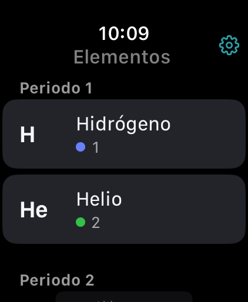
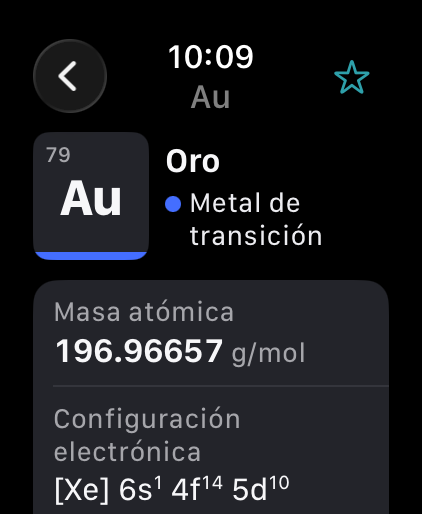
- Apple Watch
- Los 124 elementos en la muñeca, independiente del iPhone.
- Widgets
- Elemento del día, también en la pantalla de bloqueo, y tus favoritos.
- Siri, Atajos y Spotlight
- «Masa molar en Tabla Periódica», o encuentra un elemento desde la búsqueda del sistema.
- Tus unidades
- Kelvin o grados Celsius, kJ/mol o eV, y MPa, bar o atm.
- Temas con nombre de científico
- Lavoisier, Curie y Dalton, pensado para el daltonismo, son gratis.
- Accesible
- VoiceOver, texto grande y modo oscuro, en 20 idiomas.
Empieza a estudiar con datos fiables.
Gratis en el App Store para iPhone, iPad, Mac, Apple Vision Pro y Apple Watch.
The periodic table with data you can trust.
All 118 elements and the 18 tables from the back of your chemistry textbook, plus lab calculators and quizzes. Data checked against PubChem, IUPAC, NIST and the IAEA. No ads, no account, and it works offline.
For iPhone, iPad, Mac, Apple Vision Pro and Apple Watch · in 20 languages
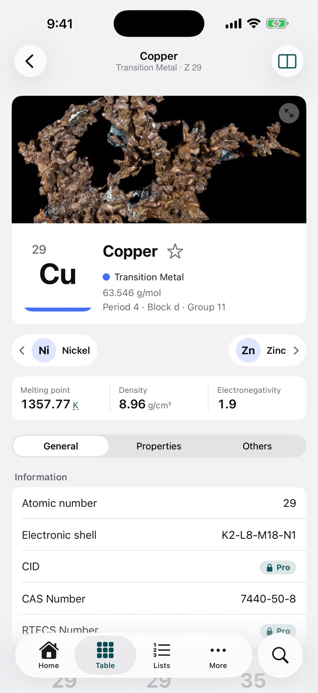
Look up, calculate, compare and practice.
Everything you need for chemistry class, in your pocket.
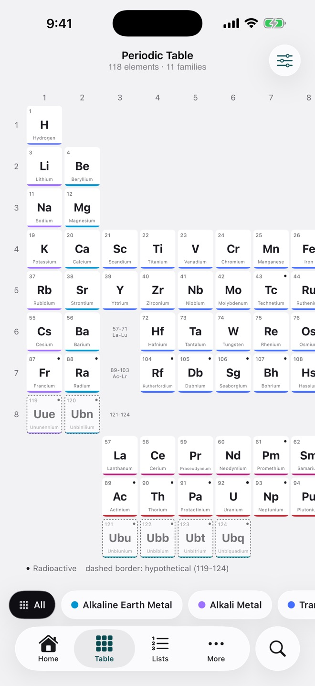
The full table
The copper page
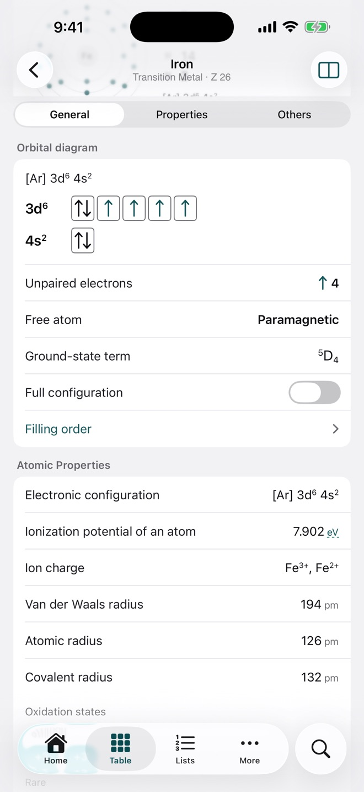
Iron orbitals
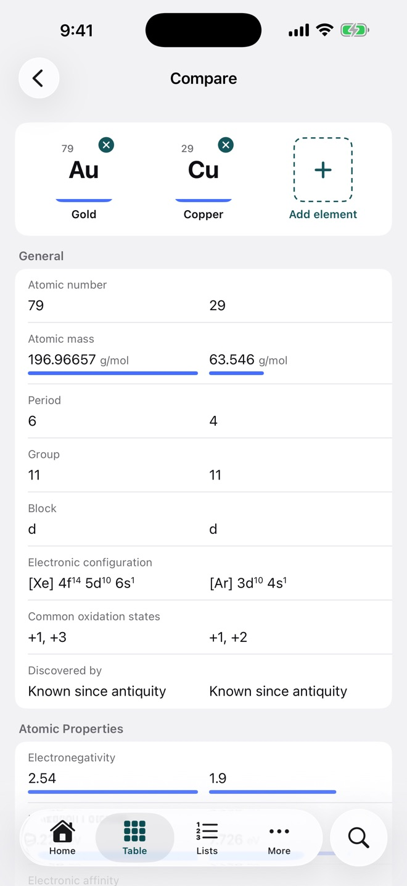
Gold versus copper
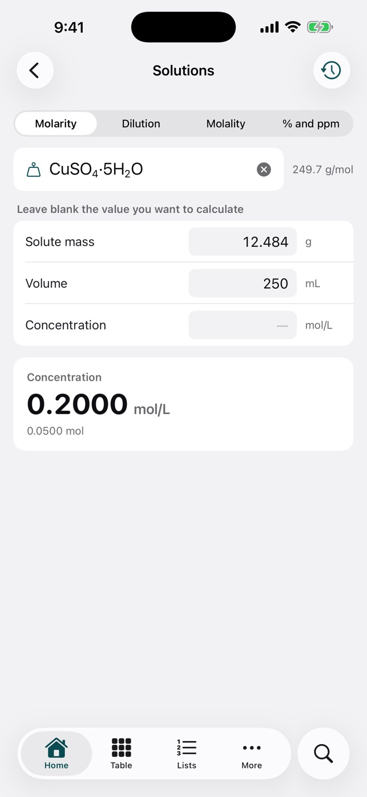
Solutions calculator
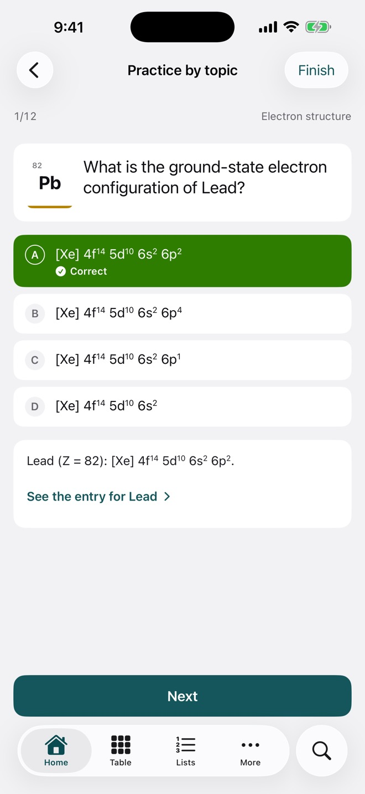
Quizzes by topic
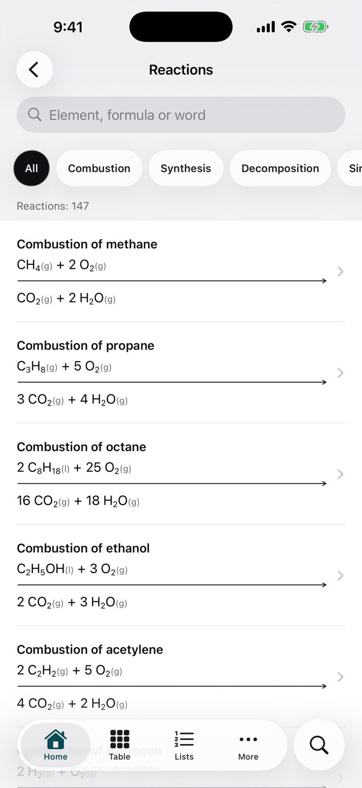
Chemical reactions
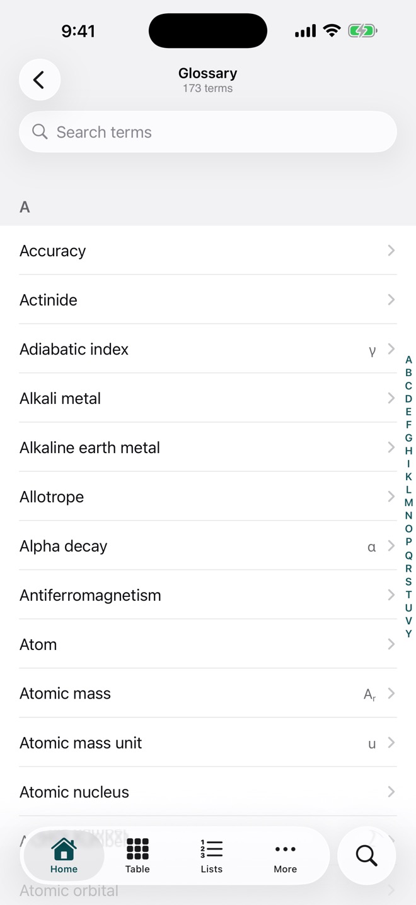
Glossary
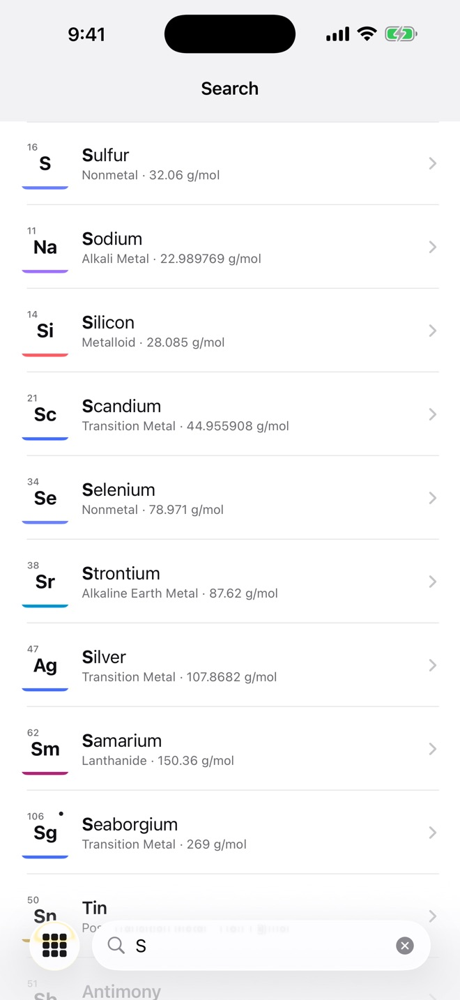
Instant search
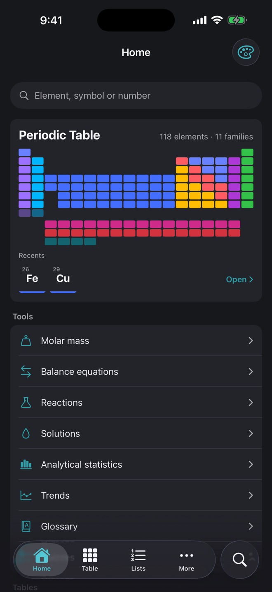
Dark mode
More room on iPad.
The same app, with pages and tables that use the whole screen.
The copper page
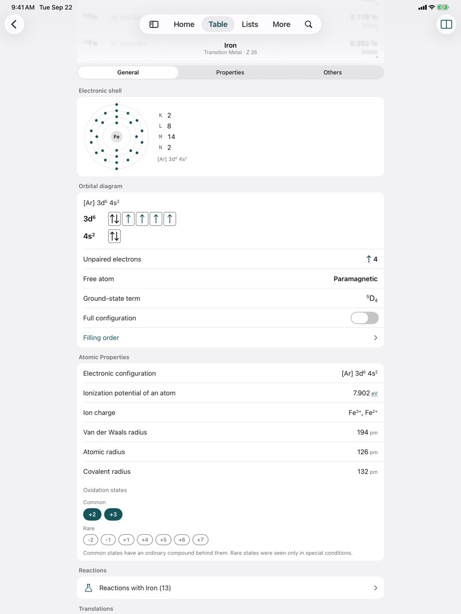
Iron structure and orbitals
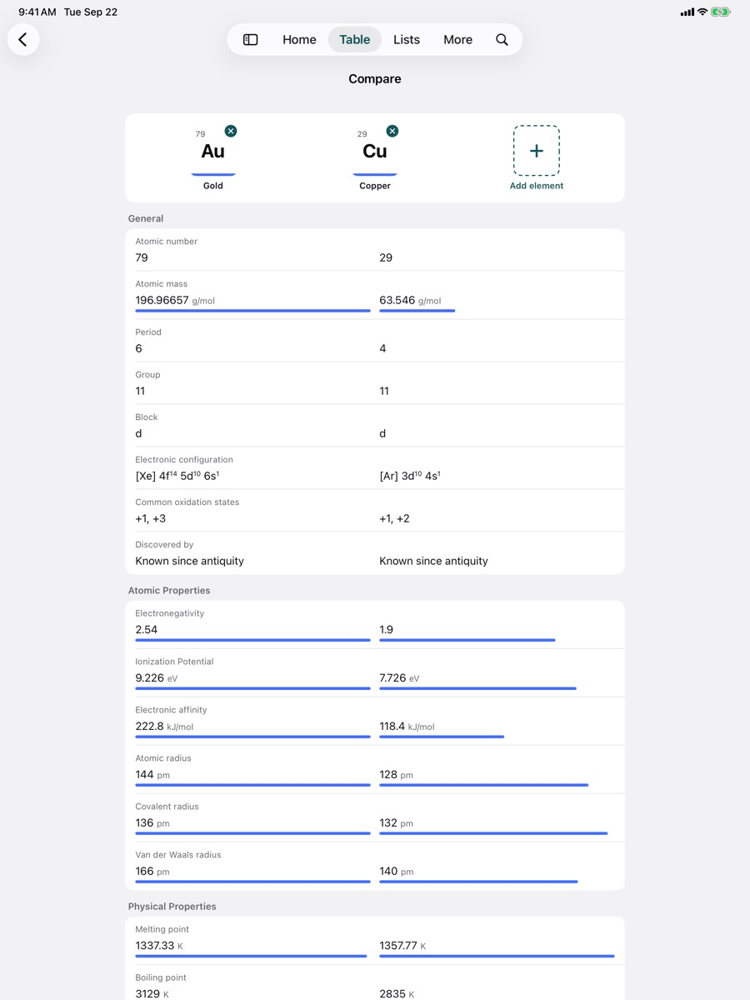
Gold versus copper
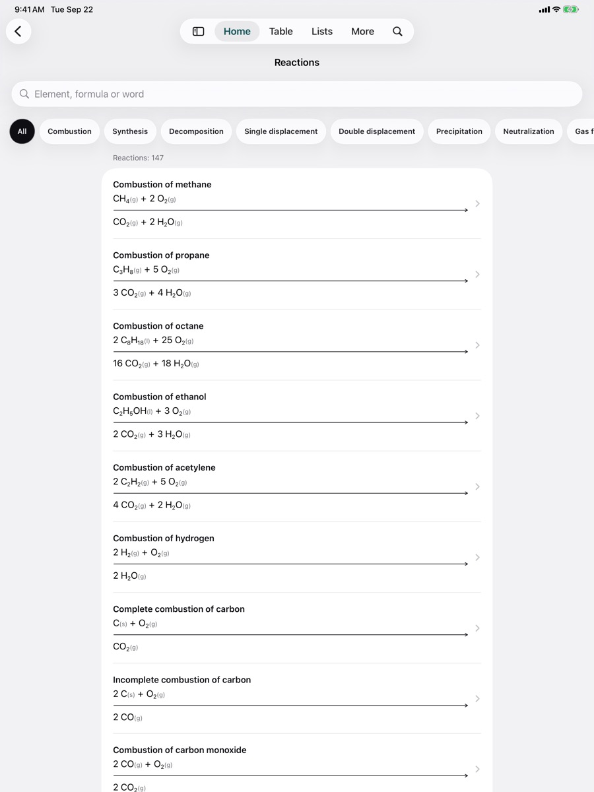
Chemical reactions
Everything you need for class.
The whole appendix of your chemistry textbook, always two taps away: from electron configuration to Student’s t.
Search the way you think
By name, symbol, atomic number, Latin or English name, CAS number or family.
A page for every element
Over 70 properties, isotopes, emission spectrum and real photos of 97 elements. Touch and hold any value to copy it.
Configuration and orbitals
Orbital diagram with Hund’s rule, unpaired electrons and ground-state term. If the real configuration breaks Madelung’s rule, it tells you.
Compare and spot trends
Two or three elements side by side, 38 sortable lists, a trends chart and a heat map on the table.
Lab calculators
Molar mass with a formula keyboard, equation balancing, solutions and analytical statistics for your measurements, with history.
Quizzes built from the data
Seven topics and three levels. Every answer shows the value behind it, with a link to its element page.
Reactions and glossary
147 reactions with their conditions and oxidation-state changes, ready to open in the balancer, and 173 terms linked to the data.
18 reference tables
Solubility, ionization energies, covalent radii, Van der Waals, Henry’s constants and critical values of t, F, Dixon and Grubbs.
Data you can trust.
Every value is checked against public reference sources, and the sources are listed in the app itself, under More › Data sources. Take the iron page, for example:
| Atomic mass | 55.845 uPubChem · IUPAC |
|---|---|
| Electron configuration | [Ar] 3d⁶ 4s²checked against NIST |
| Electronegativity (Pauling) | 1.83PubChem · IUPAC |
| Stable isotopes | ⁵⁴Fe ⁵⁶Fe ⁵⁷Fe ⁵⁸FeIAEA · NUBASE |
And when a value doesn’t exist, the app doesn’t make one up.
- ---
Anything without a reliable measurement is shown as unknown. An honest gap beats a made-up number.
- 119–124
Hypothetical elements are clearly marked: their data are predictions, not measurements.
- Fe²⁺ Fe³⁺
Oxidation states are split into common, rare and predicted.
Free, with no ads and no data collection.
What you need every day is free. Pro is a one-time purchase that’s yours forever, no subscription; if you prefer, there are also monthly and yearly plans. All three unlock the same thing on every device with your Apple Account.
Free
For studying every day.
- The table, search and element pages with the basic data
- 4 reference tables and 25 lists
- All 147 reactions and the glossary
- Unlimited quiz practice
- Calculators in basic mode
- Apple Watch, widgets and three themes
Pro
One payment, forever. Or monthly or yearly.
- The other 14 tables and 13 lists
- Advanced data: magnetic and electrical properties, the NFPA 704 diamond and every radioactive isotope
- Timed exams, spaced review and stats
- Composition by element, limiting reagent, molality and ppm, confidence intervals and Dixon and Grubbs tests
- All the other themes
Used it back in 2019? It’s back, rebuilt from scratch, and if you bought Premium it’s still yours: it comes back when you open the app or under More › Restore purchases.
What you save stays on your device.
- No accounts or sign-up
- No ads or tracking
- No third-party analytics
- Suitable for students of any age
Made for your Apple devices.
A native app on every screen, using the system features you already know.
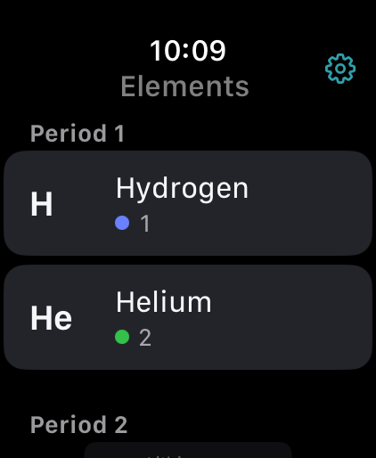
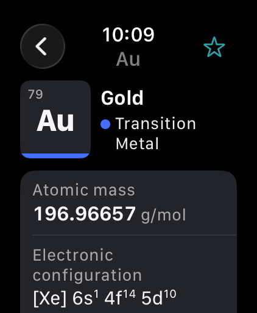
- Apple Watch
- All 124 elements on your wrist, independent of your iPhone.
- Widgets
- Element of the day, also on the Lock Screen, plus your favorites.
- Siri, Shortcuts and Spotlight
- “Molar mass in Periodic Table”, or find an element from system search.
- Your units
- Kelvin or Celsius, kJ/mol or eV, and MPa, bar or atm.
- Themes named after scientists
- Lavoisier, Curie and Dalton, designed for color blindness, are free.
- Accessible
- VoiceOver, larger text and dark mode, in 20 languages.
Start studying with data you can trust.
Free on the App Store for iPhone, iPad, Mac, Apple Vision Pro and Apple Watch.